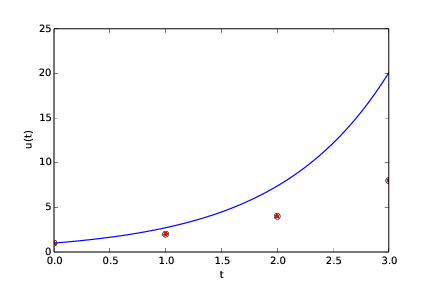
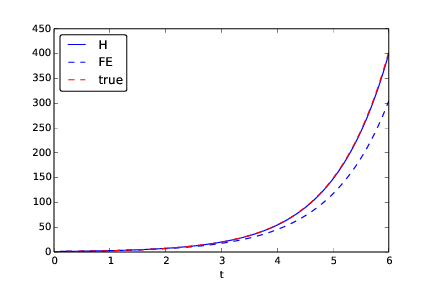
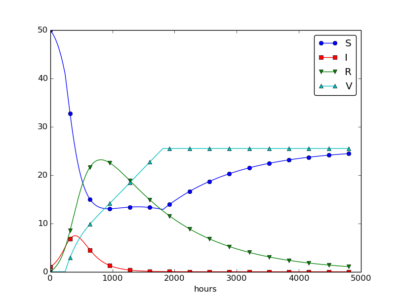
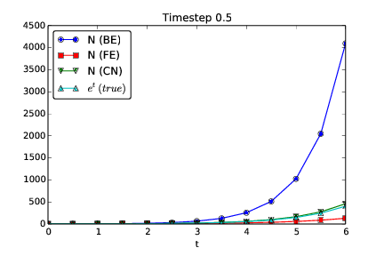
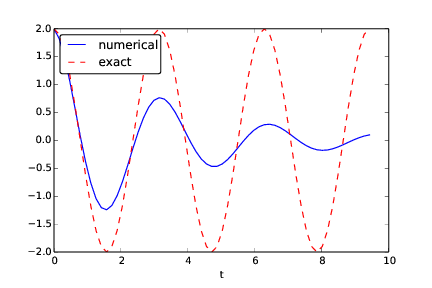
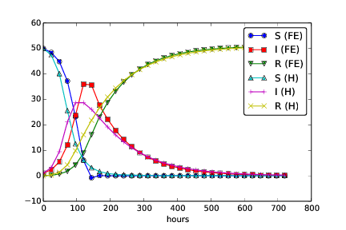

Exercises
Exercise 44: Geometric construction of the Forward Euler method
The section Understanding the Forward Euler method describes a geometric interpretation of the Forward Euler method. This exercise will demonstrate the geometric construction of the solution in detail. Consider the differential equation \( u'=u \) with \( u(0)=1 \). We use time steps \( \Delta t = 1 \).
a) Start at \( t=0 \) and draw a straight line with slope \( u'(0)=u(0)=1 \). Go one time step forward to \( t=\Delta t \) and mark the solution point on the line.
See plot and comments given below.
b) Draw a straight line through the solution point \( (\Delta t, u^1) \) with slope \( u'(\Delta t)=u^1 \). Go one time step forward to \( t=2\Delta t \) and mark the solution point on the line.
See plot and comments given below.
c) Draw a straight line through the solution point \( (2\Delta t, u^2) \) with slope \( u'(2\Delta t)=u^2 \). Go one time step forward to \( t=3\Delta t \) and mark the solution point on the line.
See plot and comments given below.
d) Set up the Forward Euler scheme for the problem \( u'=u \). Calculate \( u^1 \), \( u^2 \), and \( u^3 \). Check that the numbers are the same as obtained in a)-c).
The code may be written as
from numpy import zeros, exp, linspace
import matplotlib.pyplot as plt
def dudt(u):
return u
def u_exact(t):
return exp(t)
a = 0; b = 3
u = zeros(4)
u[0] = 1
dt = 1
for i in [0, 1, 2]:
u[i+1] = u[i] + dt*dudt(u[i])
print u
tP = [0, 1, 2, 3]
time = linspace(a, b, 100)
u_true = u_exact(time)
plt.plot(time, u_true, 'b-', tP, u, 'ro')
plt.xlabel('t')
plt.ylabel('u(t)')
plt.show()
Running the program will print the numbers 1, 2, 4 and 8, as well as produce the plot seen in Figure 51. We see the values computed in a)-c) as circles (which in a)-c) are connected by straight line segments). For comparison, the true solution is also given. The very large timestep gives a rather poor numerical solution.
Figure 51: Forward Euler method (red filled circles) applied to the ode \( u' = u \). For easy comparison, the true solution \( u(t) = e^t \) is also shown (blue continuous line).

Filename: ForwardEuler_geometric_solution.py.
Exercise 45: Make test functions for the Forward Euler method
The purpose of this exercise is to
make a file test_ode_FE.py that makes use of the ode_FE
function in the file ode_FE.py and automatically verifies the
implementation of ode_FE.
a)
The solution computed by hand in Exercise 44: Geometric construction of the Forward Euler method can be
used as a reference solution. Make a function test_ode_FE_1()
that calls ode_FE to compute
three time steps in the problem \( u'=u \), \( u(0)=1 \), and compare the
three values \( u^1 \), \( u^2 \), and \( u^3 \) with the values obtained in
Exercise 44: Geometric construction of the Forward Euler method.
See code presented below.
b)
The test in a) can be made more general using the fact
that if \( f \) is linear in \( u \) and does not depend on \( t \), i.e., we
have \( u'=ru \), for
some constant \( r \), the Forward Euler method has a closed form solution
as outlined in the section Derivation of the model: \( u^n=U_0(1+r\Delta t)^n \).
Use this result to construct a test function test_ode_FE_2() that
runs a number of steps in ode_FE and compares the computed
solution with the listed formula for \( u^n \).
The code may be written as:
from ode_FE import ode_FE
def test_ode_FE_1():
hand = [1.0, 2.0, 4.0, 8.0]
T = 3.0
dt = 1.0
U_0 = 1.0
def f(u, t):
return u
u, t = ode_FE(f, U_0, dt, T)
tol = 1E-14
for i in range(len(hand)):
err = abs(hand[i] - u[i])
assert err < tol, 'i=%d, err=%g' % (i, err)
def test_ode_FE_2():
T = 3.0
dt = 0.1 # Tested first dt = 1.0, ok
U_0 = 1.0
r = 1
def f(u,t):
return r*u
def u_exact(U_0, r, dt, n):
return U_0*(1+r*dt)**n
u, t = ode_FE(f, U_0, dt, T)
tol = 1E-12 # Relaxed from 1E-14 to get through
for n in range(len(u)):
err = abs(u_exact(U_0, r, dt, n) - u[n])
assert err < tol, 'n=%d, err=%g' % (n, err)
test_ode_FE_1()
test_ode_FE_2()
Filename: test_ode_FE.py.
Exercise 46: Implement and evaluate Heun's method
a)
A 2nd-order Runge-Kutta method, also known has Heun's method,
is derived in the section The 2nd-order Runge-Kutta method (or Heun's method). Make a function
ode_Heun(f, U_0, dt, T) (as a counterpart to ode_FE(f, U_0, dt, T)
in ode_FE.py) for solving a scalar ODE problem \( u'=f(u,t) \),
\( u(0)=U_0 \), \( t\in (0,T] \), with
this method using a time step size \( \Delta t \).
See code below.
b)
Solve the simple ODE problem \( u'=u \), \( u(0)=1 \), by the ode_Heun and
the ode_FE function. Make
a plot that compares Heun's method and the Forward Euler method
with the exact solution \( u(t)=e^t \) for \( t\in [0,6] \). Use a
time step \( \Delta t = 0.5 \).
The function ode_Heun was implemented together with the demo function
demo_ode_Heun (dedicated to the solving of the given ODE):
from numpy import linspace, zeros, exp
from ode_FE import ode_FE
def ode_Heun(f, U_0, dt, T):
N_t = int(round(float(T)/dt))
u = zeros(N_t+1)
t = linspace(0, N_t*dt, len(u))
u[0] = U_0
for n in range(N_t):
u_star = u[n] + dt*f(u[n],t[n])
u[n+1] = u[n] + 0.5*dt*(f(u[n],t[n]) + f(u_star,t[n]))
return u, t
def demo_ode_Heun():
"""Test case: u' = u, u(0) = 1"""
def f(u,t):
return u
u_Heun, t = ode_Heun(f=f, U_0=1, dt=0.5, T=6)
u_FE, t = ode_FE(f=f, U_0=1, dt=0.5, T=6)
fig = plt.figure()
l1, l2, l3 = plt.plot(...
t, u_Heun,'b-', t, u_FE,'b--', t, exp(t),'r--')
fig.legend((l1, l2, l3), ('H', 'FE', 'true'), 'upper left')
plt.xlabel('t')
plt.show()
if __name__ == '__main__':
demo_ode_Heun()
Running the code with \( \Delta t = 0.5 \) (seen in the code) gives the plot seen in Figure 52.
Figure 52: Heun and Forward Euler with timestep \( \Delta t = 0.5 \).

c) For the case in b), find through experimentation the largest value of \( \Delta t \) where the exact solution and the numerical solution by Heun's method cannot be distinguished visually. It is of interest to see how far off the curve the Forward Euler method is when Heun's method can be regarded as "exact" (for visual purposes).
A timestep of \( \Delta t = 0.1 \) was found to be the largest reasonable timestep that still made the solution from Heun's method come on top of the exact solution (from graphical inspection only), see Figure 53.
Figure 53: Heun and Forward Euler with timestep \( \Delta t = 0.1 \). A larger timestep makes Heun's method deviate from the true solution (only judged graphically).

Filename: ode_Heun.py.
Exercise 47: Find an appropriate time step; logistic model
Compute the numerical solution of the logistic equation for a set of repeatedly halved time steps: \( \Delta t_k = 2^{-k}\Delta t \), \( k=0,1,\ldots \). Plot the solutions corresponding to the last two time steps \( \Delta t_{k} \) and \( \Delta t_{k-1} \) in the same plot. Continue doing this until you cannot visually distinguish the two curves in the plot. Then one has found a sufficiently small time step.
Extend the logistic.py file. Introduce a loop over \( k \), write out
\( \Delta t_k \), and ask the
user if the loop is to be continued.
This may be implemented as:
from ode_FE import ode_FE
import matplotlib.pyplot as plt
dt = 20; T = 100
u_old, t_old = ode_FE(f=lambda u, t: 0.1*(1-u/500.)*u,
U_0=100, dt=dt, T=T)
k = 1
one_more = True
while one_more == True:
dt_k = 2**(-k)*dt
u_new, t_new = ode_FE(f=lambda u, t: 0.1*(1-u/500.)*u,
U_0=100, dt=dt_k, T=T)
plt.plot(t_old,u_old,'b-',t_new,u_new,'r--')
plt.xlabel('t'); plt.ylabel('N(t)');
plt.show()
print "Timestep was: ", dt_k
answer = raw_input('Do one more with finer dt (y/n)? ')
if answer == 'y':
u_old = u_new.copy()
t_old = t_new.copy()
else:
one_more = False
k += 1
Filename: logistic_dt.py.
Exercise 48: Find an appropriate time step; SIR model
Repeat Exercise 47: Find an appropriate time step; logistic model for the SIR model.
Import the ode_FE function from the ode_system_FE module
and make a modified demo_SIR function that has a loop
over repeatedly halved time steps. Plot \( S \), \( I \), and \( R \)
versus time for the two last time step sizes in the same plot.
This may be implemented as:
from ode_system_FE import ode_FE
import matplotlib.pyplot as plt
def demo_SIR():
"""Test case using an SIR model"""
def f(u, t):
S, I, R = u
return [-beta*S*I, beta*S*I - gamma*I, gamma*I]
beta = 10./(40*8*24)
gamma = 3./(15*24)
dt = 48.0 # 48 h
D = 30 # Simulate for D days
N_t = int(D*24/dt) # Corresponding no of hours
T = dt*N_t # End time
U_0 = [50, 1, 0]
u_old, t_old = ode_FE(f, U_0, dt, T)
S_old = u_old[:,0]
I_old = u_old[:,1]
R_old = u_old[:,2]
k = 1
one_more = True
while one_more == True:
dt_k = 2**(-k)*dt
u_new, t_new = ode_FE(f, U_0, dt_k, T)
S_new = u_new[:,0]
I_new = u_new[:,1]
R_new = u_new[:,2]
plt.plot(t_old, S_old, 'b-', t_new, S_new, 'b--',\
t_old, I_old, 'r-', t_new, I_new, 'r--',\
t_old, R_old, 'g-', t_new, R_new, 'g--')
plt.xlabel('hours');
plt.ylabel('S (blue), I (red), R (green)')
plt.show()
print "Finest timestep was: ", dt_k
answer = raw_input('Do one more with finer dt (y/n)? ')
if answer == 'y':
S_old = S_new.copy()
R_old = R_new.copy()
I_old = I_new.copy()
t_old = t_new.copy()
k += 1
else:
one_more = False
if __name__ == '__main__':
demo_SIR()
Filename: SIR_dt.py.
Exercise 49: Model an adaptive vaccination campaign
In the SIRV model with time-dependent vaccination from the section Discontinuous coefficients: a vaccination campaign, we want to test the effect of an adaptive vaccination campaign where vaccination is offered as long as half of the population is not vaccinated. The campaign starts after \( \Delta \) days. That is, \( p=p_0 \) if \( V < \frac{1}{2}(S^0+I^0) \) and \( t>\Delta \) days, otherwise \( p=0 \).
Demonstrate the effect of this vaccination policy: choose \( \beta \), \( \gamma \), and \( \nu \) as in the section Discontinuous coefficients: a vaccination campaign, set \( p=0.001 \), \( \Delta =10 \) days, and simulate for 200 days.
This discontinuous \( p(t) \) function is easiest implemented as a
Python function containing the indicated if test.
You may use the file SIRV1.py
as starting point, but note that it implements a time-dependent
\( p(t) \) via an array.
An appropriate program is
# Time unit: 1 h
beta = 10./(40*8*24)
beta /= 4 # reduce beta compared to SIR1.py
print 'beta:', beta
gamma = 3./(15*24)
dt = 0.1 # 6 min
D = 200 # simulate for D days
N_t = int(D*24/dt) # corresponding no of hours
nu = 1./(24*50) # average loss of immunity
Delta = 10 # start point of campaign (in days)
p_0 = 0.001
from numpy import zeros, linspace
t = linspace(0, N_t*dt, N_t+1)
S = zeros(N_t+1)
I = zeros(N_t+1)
R = zeros(N_t+1)
V = zeros(N_t+1)
def p(t):
# Rely on p_0, n, S, and V as global variables
return p_0 if (V[n] < 0.5*(S[0]+I[0]) and t > Delta*24) else 0
# Initial condition
S[0] = 50
I[0] = 1
R[0] = 0
V[0] = 0
# Step equations forward in time
for n in range(N_t):
S[n+1] = S[n] - dt*beta*S[n]*I[n] + dt*nu*R[n] - dt*p(t[n])*S[n]
V[n+1] = V[n] + dt*p(t[n])*S[n]
I[n+1] = I[n] + dt*beta*S[n]*I[n] - dt*gamma*I[n]
R[n+1] = R[n] + dt*gamma*I[n] - dt*nu*R[n]
loss = int(V[n+1] + S[n+1] + R[n+1] + I[n+1]) - \
int(V[0] + S[0] + R[0] + I[0])
if loss > 0:
print 'loss: %d' % loss
from matplotlib.pyplot import plot, savefig, legend, xlabel, show
plot(t, S, t, I, t, R, t, V)
legend(['S', 'I', 'R', 'V'], loc='upper right')
xlabel('hours')
savefig('tmp.pdf'); savefig('tmp.png')
show()
The result looks like

Filename: SIRV_p_adapt.py.
Exercise 50: Make a SIRV model with time-limited effect of vaccination
We consider the SIRV model from the section Incorporating vaccination, but now the effect of vaccination is time-limited. After a characteristic period of time, \( \pi \), the vaccination is no more effective and individuals are consequently moved from the V to the S category and can be infected again. Mathematically, this can be modeled as an average leakage \( -\pi^{-1}V \) from the V category to the S category (i.e., a gain \( \pi^{-1}V \) in the latter). Write up the complete model, implement it, and rerun the case from the section Incorporating vaccination with various choices of parameters to illustrate various effects.
A possible code is
"""As SIR2.py, but including constant vaccination."""
from numpy import zeros, linspace
import matplotlib.pyplot as plt
# Time unit: 1 h
beta = 10./(40*8*24)
beta /= 4 # reduce beta compared to SIR1.py
print 'beta:', beta
gamma = 3./(15*24)
dt = 0.1 # 6 min
D = 300 # Simulate for D days
N_t = int(D*24/dt) # Corresponding no of hours
nu = 1./(24*50) # Average loss of immunity: 50 days
p = 0.01 # Effect of vaccination
pi = 1./50 # Average loss of vaccine effect: 50 days
t = linspace(0, N_t*dt, N_t+1)
S = zeros(N_t+1)
I = zeros(N_t+1)
R = zeros(N_t+1)
V = zeros(N_t+1)
# Initial condition
S[0] = 50
I[0] = 1
R[0] = 0
V[0] = 0
# Step equations forward in time
for n in range(N_t):
S[n+1] = S[n] - dt*beta*S[n]*I[n] + dt*nu*R[n] - dt*p*S[n] + dt*pi*V[n]
V[n+1] = V[n] + dt*p*S[n] - dt*pi*V[n]
I[n+1] = I[n] + dt*beta*S[n]*I[n] - dt*gamma*I[n]
R[n+1] = R[n] + dt*gamma*I[n] - dt*nu*R[n]
loss = int(V[n+1] + S[n+1] + R[n+1] + I[n+1]) - \
int(V[0] + S[0] + R[0] + I[0])
if loss > 0:
print 'loss: %d' % loss
fig = plt.figure()
t /= 24.0 # convert hours to days in plots
l1, l2, l3, l4 = plt.plot(t, S, t, I, t, R, t, V)
fig.legend((l1, l2, l3, l4), ('S', 'I', 'R', 'V'), 'upper right')
plt.xlabel('days')
plt.show()
plt.savefig('tmp.pdf'); plt.savefig('tmp.png')
Filename: SIRV1_V2S.py.
Exercise 51: Refactor a flat program
Consider the file osc_FE.py implementing the Forward Euler
method for the oscillating system model
(4.43)-(4.44).
The osc_FE.py is what we often refer to as a flat program,
meaning that it is just one main program with no functions.
To easily reuse the numerical computations in other contexts,
place the part that produces the numerical solution (allocation of arrays,
initializing the arrays at time zero, and the time loop) in
a function osc_FE(X_0, omega, dt, T), which returns u, v, t.
Place the particular
computational example in osc_FE.py in a function
demo().
Construct the file osc_FE_func.py such that the
osc_FE function can easily be reused
in other programs.
In Python, this means that osc_FE_func.py is a module that can
be imported in other programs.
The requirement of a module is that there should be no main program,
except in the test block.
You must therefore
call demo from a test block (i.e., the block
after if __name__ == '__main__').
Here is the file
osc_FE_func.py:
from numpy import zeros, linspace, pi, cos
def osc_FE(X_0, omega, dt, T):
N_t = int(round(T/dt))
u = zeros(N_t+1)
v = zeros(N_t+1)
t = linspace(0, N_t*dt, N_t+1)
# Initial condition
u[0] = X_0
v[0] = 0
# Step equations forward in time
for n in range(N_t):
u[n+1] = u[n] + dt*v[n]
v[n+1] = v[n] - dt*omega**2*u[n]
return u, v, t
def demo():
omega = 2
P = 2*pi/omega
dt = P/20
T = 3*P
X_0 = 2
u, v, t = osc_Heun(X_0, omega, dt, T)
from matplotlib.pyplot import \
plot, savefig, legend, xlabel, figure, show
plot(t, u, 'b-', t, X_0*cos(omega*t), 'r--')
legend(['numerical', 'exact'], loc='upper left')
xlabel('t')
savefig('tmp.pdf'); savefig('tmp.png')
# Exact analytical solution
figure()
from numpy import array
u_num_ex = array([X_0*(1+1j*omega*dt)**n for n in range(N_t+1)])
plot(t, u, 'b-', t, u_num_ex.real, 'r-')
show()
if __name__ == '__main__':
demo()
Filename: osc_FE_func.py.
Exercise 52: Simulate oscillations by a general ODE solver
Solve the system (4.43)-(4.44)
using the general solver ode_FE in the file ode_system_FE.py
described in the section Programming the numerical method; the general case. Program the ODE system
and the call to the ode_FE function in a separate file
osc_ode_FE.py.
Equip this file with a test function that reads a file with correct
\( u \) values and compares these with those computed by the ode_FE
function. To find correct \( u \) values, modify the program
osc_FE.py to dump the u array to file, run osc_FE.py, and
let the test function read the reference results from that file.
The program may be implemented as:
from ode_system_FE import ode_FE
from numpy import zeros
import matplotlib.pyplot as plt
def osc_FE_2file(filename, X_0, omega, dt, T):
N_t = int(round(float(T/dt)))
u = zeros(N_t+1)
v = zeros(N_t+1)
# Initial condition
u[0] = X_0
v[0] = 0
outfile = open(filename, 'w')
outfile.write('%10.5f\n' % (u[0]))
# Step equations forward in time
for n in range(N_t):
u[n+1] = u[n] + dt*v[n]
v[n+1] = v[n] - dt*omega**2*u[n]
outfile.write('%10.5f\n' % (u[n+1]))
outfile.close()
def test_osc_ode_FE():
def f(sol, t, omega=2):
u, v = sol
return [v, -omega**2*u]
# Set and compute problem dependent parameters
omega = 2
X_0 = 1
number_of_periods = 6
time_intervals_per_period = 20
from numpy import pi
P = 2*pi/omega # Length of one period
dt = P/time_intervals_per_period # Time step
T = number_of_periods*P # Final simulation time
U_0 = [X_0, 0] # Initial conditions
# Produce u data on file that will be used for reference
file_name = 'osc_FE_data'
osc_FE_2file(file_name, X_0, omega, dt, T)
sol, t = ode_FE(f, U_0, dt, T)
u = sol[:,0]
# Read data from file for comparison
infile = open(file_name, 'r')
u_ref = [];
for line in infile:
words = line.split()
u_ref.append(float(words[0]))
infile.close()
tol = 1E-5 # Tried several stricter ones first
for n in range(len(u)):
err = abs(u_ref[n] - u[n])
success = err < tol
msg = 'n=%d, err=%g' % (n, err)
assert success, msg
# choose to also plot, just to get a visual impression of u
fig = plt.figure()
l1, l2 = plt.plot(t, u_ref, 'b-', t, u, 'r--')
fig.legend((l1, l2), ('u ref','u'), 'upper left')
plt.show()
if __name__ == '__main__':
test_osc_ode_FE()
Filename: osc_ode_FE.py.
Exercise 53: Compute the energy in oscillations
a)
Make a function osc_energy(u, v, omega) for returning the potential and
kinetic energy of an oscillating system described by
(4.43)-(4.44).
The potential energy is taken as \( \frac{1}{2}\omega^2u^2 \) while
the kinetic energy is \( \frac{1}{2}v^2 \). (Note that these expressions
are not exactly the physical potential and kinetic energy, since
these would be \( \frac{1}{2}mv^2 \) and \( \frac{1}{2}ku^2 \) for a model
\( mx'' + kx=0 \).)
Place the osc_energy in a separate file osc_energy.py
such that the function can be called from other functions.
The function may be implemented as:
def osc_energy(u, v, omega):
return 0.5*omega**2*u**2, 0.5*v**2
b)
Add a call to osc_energy in the programs osc_FE.py and
osc_EC.py and plot the sum of the kinetic and potential energy.
How does the total energy develop for the Forward Euler and the
Euler-Cromer schemes?
The Forward Euler code reads
from osc_energy import osc_energy
from numpy import zeros, linspace, pi, cos
omega = 2
P = 2*pi/omega
dt = P/20
T = 3*P
N_t = int(round(T/dt))
t = linspace(0, N_t*dt, N_t+1)
u = zeros(N_t+1)
v = zeros(N_t+1)
# Initial condition
X_0 = 2
u[0] = X_0
v[0] = 0
# Step equations forward in time
for n in range(N_t):
u[n+1] = u[n] + dt*v[n]
v[n+1] = v[n] - dt*omega**2*u[n]
U, K = osc_energy(u, v, omega)
plt.plot(t, U+K, 'b-')
plt.xlabel('t')
plt.ylabel('U+K')
plt.show()
The program generates the following plot showing how the energy increases with time.

The Euler-Cromer code might be implemented as
from osc_energy import osc_energy
from numpy import zeros, linspace, pi, cos
import matplotlib.pyplot as plt
omega = 2
P = 2*pi/omega
dt = P/20
T = 40*P
N_t = int(round(T/dt))
t = linspace(0, N_t*dt, N_t+1)
print 'N_t:', N_t
u = zeros(N_t+1)
v = zeros(N_t+1)
# Initial condition
X_0 = 2
u[0] = X_0
v[0] = 0
# Step equations forward in time
for n in range(N_t):
v[n+1] = v[n] - dt*omega**2*u[n]
u[n+1] = u[n] + dt*v[n+1]
U, K = osc_energy(u, v, omega)
plt.plot(t, U+K, 'b-')
plt.xlabel('t')
plt.ylabel('U+K')
plt.show()
In this case, as illustrated by the plot produced, the energy does not increase.

Filenames: osc_energy.py, osc_FE_energy.py, osc_EC_energy.py.
Exercise 54: Use a Backward Euler scheme for population growth
We consider the ODE problem \( N'(t)=rN(t) \), \( N(0)=N_0 \). At some time, \( t_n=n\Delta t \), we can approximate the derivative \( N'(t_n) \) by a backward difference, see Figure 38: $$ N'(t_n)\approx \frac{N(t_n) - N(t_n-\Delta t)}{\Delta t} = \frac{N^n - N^{n-1}}{\Delta t},$$ which leads to $$ \frac{N^n - N^{n-1}}{\Delta t} = rN^n\thinspace,$$ called the Backward Euler scheme.
a) Find an expression for the \( N^n \) in terms of \( N^{n-1} \) and formulate an algorithm for computing \( N^n \), \( n=1,2,\ldots,N_t \).
Re-arranging the given expression leads to: $$ \begin{equation} N^n = \frac{N^{n-1}}{1-r\Delta t}. \tag{4.84} \end{equation} $$
Noting that the right hand side may be expressed by use of \( N^0 \), we may formulate the following algorithm:
For \( n = 1,2,...,N \) compute $$ \begin{equation} N^n = \left(1-r\Delta t\right)^{-n} N^0. \tag{4.85} \end{equation} $$
b)
Implement the algorithm in a) in a function growth_BE(N_0, dt, T)
for solving \( N'=rN \), \( N(0)=N_0 \), \( t\in (0,T] \), with time step \( \Delta t \) (dt).
See code presented below.
c)
Implement the Forward Euler scheme in a function growth_FE(N_0, dt, T)
as described in b).
With a demo function named application, all of the code appears as:
from numpy import zeros, linspace, exp
import matplotlib.pyplot as plt
def growth_BE(r, N_0, dt, T):
N_t = int(round(T/dt))
N = zeros(N_t+1)
N[0] = N_0
for n in range(1, N_t+1):
N[n] = (1-r*dt)**(-n) * N_0
return N
def growth_FE(r, N_0, dt, T):
N_t = int(round(T/dt))
N = zeros(N_t+1)
N[0] = N_0
for n in range(1, N_t+1):
N[n] = (1+r*dt)**n * N_0
return N
def application():
r = 1
N_0 = 1; T = 6
dt = 0.5
N_BE = growth_BE(r, N_0, dt, T)
N_FE = growth_FE(r, N_0, dt, T)
time = linspace(0, T, int(round(T/dt))+1)
fig = plt.figure()
l1, l2, l3 = plt.plot(time, N_BE, time, N_FE, time, exp(time))
fig.legend((l1, l2, l3), ('N (BE)', 'N (FE)', 'e^t (true)'),\
'upper left')
plt.title('Timestep 0.5')
plt.xlabel('t');
plt.savefig('tmp1.pdf')
dt = 0.05
N_BE = growth_BE(r, N_0, dt, T)
N_FE = growth_FE(r, N_0, dt, T)
time = linspace(0, T, int(round(T/dt))+1)
fig = plt.figure()
l1, l2, l3 = plt.plot(time, N_BE, time, N_FE, time, exp(time))
fig.legend((l1, l2, l3), ('N (BE)', 'N (FE)', 'e^t (true)'),\
'upper left')
plt.title('Timestep 0.05')
plt.xlabel('t');
plt.savefig('tmp2.pdf')
if __name__ == '__main__':
application()
The two plots generated are given below.
d) Compare visually the solution produced by the Forward and Backward Euler schemes with the exact solution when \( r=1 \) and \( T=6 \). Make two plots, one with \( \Delta t = 0.5 \) and one with \( \Delta t=0.05 \).
With a time step of 0.5, the BE approach deviates substantially more from the true solution than the FE. This is a consequence of the very large time step used.

Reducing the time step to 0.05 improves the situation for BE, so that FE and BE now give approximately the same error at each time step, but with opposite signs.

With both time steps and both methods, the error grows with time. It should be noted that the graph produced with FE is below the true solution, while the one from BE is above. This should be expected because of the following. The slope of the true graph (or solution) increases with time. The FE does, at each time step, use the derivative from the beginning of the time step. This derivative is the smallest on the time interval covered by that time step. Therefore, the corresponding graph ends up below the true one. With BE, it is the other way around, since it uses the derivative at the end of each timestep, which then is the largest derivative on the time interval covered by that time step.
Filename: growth_BE.py.
Exercise 55: Use a Crank-Nicolson scheme for population growth
It is recommended to do Exercise 54: Use a Backward Euler scheme for population growth prior to the present one. Here we look at the same population growth model \( N'(t)=rN(t) \), \( N(0)=N_0 \). The time derivative \( N'(t) \) can be approximated by various types of finite differences. Exercise 54: Use a Backward Euler scheme for population growth considers a backward difference (Figure 38), while the section Numerical solution explained the forward difference (Figure 21). A centered difference is more accurate than a backward or forward difference: $$ N'(t_n+\frac{1}{2}\Delta t)\approx\frac{N(t_n+\Delta t)-N(t_n)}{\Delta t}= \frac{N^{n+1}-N^n}{\Delta t}\thinspace .$$ This type of difference, applied at the point \( t_{n+\frac{1}{2}}=t_n + \frac{1}{2}\Delta t \), is illustrated geometrically in Figure 39.
a) Insert the finite difference approximation in the ODE \( N'=rN \) and solve for the unknown \( N^{n+1} \), assuming \( N^n \) is already computed and hence known. The resulting computational scheme is often referred to as a Crank-Nicolson scheme.
With a central difference approximation used for the derivative, we also need to reformulate the function (expressing the derivative) on the right hand side to include the unknowns that we want only. For the right hand side we use the average of the derivative from \( n \) and \( n+1 \), i.e. at each end of the time step. We then get $$ \frac{N^{n+1} - N^n}{\Delta t} = \frac{1}{2}(rN^n + rN^{n+1})\thinspace,$$
which means that $$ N^{n+1} - \frac{\Delta t}{2}rN^{n+1} = N^n + \frac{\Delta t}{2}(rN^n)\thinspace.$$
Isolating \( N^{n+1} \), we get the Crank-Nicolson scheme as $$ N^{n+1} = \frac{1+\frac{\Delta t}{2}r}{1-\frac{\Delta t}{2}r} N^n\thinspace.$$
b)
Implement the algorithm in a) in a function growth_CN(N_0, dt, T)
for solving \( N'=rN \), \( N(0)=N_0 \), \( t\in (0,T] \), with time step \( \Delta t \) (dt).
See code presented below.
c) Make plots for comparing the Crank-Nicolson scheme with the Forward and Backward Euler schemes in the same test problem as in Exercise 54: Use a Backward Euler scheme for population growth.
With a demo function named application, all of the code appears as:
from growth_BE import growth_BE, growth_FE
from numpy import zeros, linspace, exp
import matplotlib.pyplot as plt
def growth_CN(r, N_0, dt, T):
N_t = int(round(T/dt))
N = zeros(N_t+1)
N[0] = N_0
for n in range(0, N_t):
N[n+1] = ( (1+0.5*dt*r)/(1-0.5*dt*r) ) * N[n]
return N
def application():
r = 1
N_0 = 1; T = 6
dt = 0.5
print "hei1"
N_CN = growth_CN(r, N_0, dt, T)
N_BE = growth_BE(r, N_0, dt, T)
N_FE = growth_FE(r, N_0, dt, T)
time = linspace(0, T, int(round(T/dt))+1)
fig = plt.figure()
l1, l2, l3, l4 = \
plt.plot(time, N_BE, time, N_FE, time, N_CN, time, exp(time))
fig.legend((l1, l2, l3, l4),\
('N (BE)', 'N (FE)', 'N (CN)', 'e^t (true)'), 'upper left')
plt.title('Timestep 0.5')
plt.xlabel('t');
plt.savefig('tmp1.pdf')
dt = 0.05
N_CN = growth_CN(r, N_0, dt, T)
N_BE = growth_BE(r, N_0, dt, T)
N_FE = growth_FE(r, N_0, dt, T)
time = linspace(0, T, int(round(T/dt))+1)
fig = plt.figure()
l1, l2, l3, l4 = \
plt.plot(time, N_BE, time, N_FE, time, N_CN, time, exp(time))
fig.legend((l1, l2, l3, l4),\
('N (BE)', 'N (FE)', 'N (CN)', 'e^t (true)'), 'upper left')
plt.title('Timestep 0.05')
plt.xlabel('t');
plt.savefig('tmp2.pdf')
if __name__ == '__main__':
application()
With a time step of 0.5, we get the following plot:

Reducing the time step to 0.05, it changes into:

We observe that CN produces the best solution of the three alternatives. This should be expected, since it is the most accurate one (second order accuracy compared to first order with FE and BE).
Filename: growth_CN.py.
Exercise 56: Understand finite differences via Taylor series
The Taylor series around a point \( x=a \) can for a function \( f(x) \) be written $$ \begin{align*} f(x) &= f(a) + \frac{d}{dx}f(a)(x-a) + \frac{1}{2!}\frac{d^2}{dx^2}f(a)(x-a)^2 \\ &\quad + \frac{1}{3!}\frac{d^3}{dx^3}f(a)(x-a)^3 + \ldots\\ & = \sum_{i=0}^\infty \frac{1}{i!}\frac{d^i}{dx^i}f(a)(x-a)^i\thinspace . \end{align*} $$ For a function of time, as addressed in our ODE problems, we would use \( u \) instead of \( f \), \( t \) instead of \( x \), and a time point \( t_n \) instead of \( a \): $$ \begin{align*} u(t) &= u(t_n) + \frac{d}{dt}u(t_n)(t-t_n) + \frac{1}{2!}\frac{d^2}{dt^2}u(t_n)(t-t_n)^2\\ &\quad + \frac{1}{3!}\frac{d^3}{dt^3}u(t_n)(t-t_n)^3 + \ldots\\ & = \sum_{i=0}^\infty \frac{1}{i!}\frac{d^i}{dt^i}u(t_n)(t-t_n)^i\thinspace . \end{align*} $$
a) A forward finite difference approximation to the derivative \( f'(a) \) reads $$ u'(t_n) \approx \frac{u(t_n+\Delta t)- u(t_n)}{\Delta t}\thinspace .$$ We can justify this formula mathematically through Taylor series. Write up the Taylor series for \( u(t_n+\Delta t) \) (around \( t=t_n \), as given above), and then solve the expression with respect to \( u'(t_n) \). Identify, on the right-hand side, the finite difference approximation and an infinite series. This series is then the error in the finite difference approximation. If \( \Delta t \) is assumed small (i.e. \( \Delta t < < 1 \)), \( \Delta t \) will be much larger than \( \Delta t^2 \), which will be much larger than \( \Delta t^3 \), and so on. The leading order term in the series for the error, i.e., the error with the least power of \( \Delta t \) is a good approximation of the error. Identify this term.
We get $$ \begin{align*} u(t_n+\Delta t) &= u(t_n) + \frac{d}{dt}u(t_n)\Delta t + \frac{1}{2!}\frac{d^2}{dt^2}u(t_n)\Delta t^2 + \frac{1}{3!}\frac{d^3}{dt^3}u(t_n)\Delta t^3 + \ldots\\ \frac{d}{dt}u(t_n) & = \frac{u(t_n+\Delta t) - u(t_n)}{\Delta t} - \frac{1}{2!}\frac{d^2}{dt^2}u(t_n)\Delta t - \frac{1}{3!}\frac{d^3}{dt^3}u(t_n)\Delta t^2 + \ldots\\ \thinspace . \end{align*} $$ The finite difference approximation is found as the first term on the right hand side, while the remaining terms make up the infinite series that represents the error of the finite difference approximation.
The leading order error term is therefore \( -\frac{1}{2!}\frac{d^2}{dt^2}u(t_n)\Delta t \).
b) Repeat a) for a backward difference: $$ u'(t_n) \approx \frac{u(t_n)- u(t_n-\Delta t)}{\Delta t}\thinspace .$$ This time, write up the Taylor series for \( u(t_n-\Delta t) \) around \( t_n \). Solve with respect to \( u'(t_n) \), and identify the leading order term in the error. How is the error compared to the forward difference?
We get $$ \begin{align*} u(t_n-\Delta t) &= u(t_n) - \frac{d}{dt}u(t_n)\Delta t + \frac{1}{2!}\frac{d^2}{dt^2}u(t_n)\Delta t^2 - \frac{1}{3!}\frac{d^3}{dt^3}u(t_n)\Delta t^3 + \ldots\\ \frac{d}{dt}u(t_n) & = \frac{u(t_n) - u(t_n-\Delta t)}{\Delta t} + \frac{1}{2!}\frac{d^2}{dt^2}u(t_n)\Delta t - \frac{1}{3!}\frac{d^3}{dt^3}u(t_n)\Delta t^2 + \ldots\\ \thinspace . \end{align*} $$ The finite difference approximation is found as the first term on the right hand side, while the remaining terms make up the infinite series that represents the error of the finite difference approximation.
The leading order error term is therefore \( +\frac{1}{2!}\frac{d^2}{dt^2}u(t_n)\Delta t \), which is of the same magnitude as the corresponding error in a), but with opposite sign.
c) A centered difference approximation to the derivative, as explored in Exercise 55: Use a Crank-Nicolson scheme for population growth, can be written $$ u'(t_n+\frac{1}{2}\Delta t) \approx \frac{u(t_n+\Delta t)- u(t_n)}{\Delta t}\thinspace .$$ Write up the Taylor series for \( u(t_n) \) around \( t_n+\frac{1}{2}\Delta t \) and the Taylor series for \( u(t_n+\Delta t) \) around \( t_n+\frac{1}{2}\Delta t \). Subtract the two series, solve with respect to \( u'(t_n+\frac{1}{2}\Delta t) \), identify the finite difference approximation and the error terms on the right-hand side, and write up the leading order error term. How is this term compared to the ones for the forward and backward differences?
We write $$ \begin{align*} u(t_n) &= u(t_n+\frac{\Delta t}{2}) - \frac{d}{dt}u(t_n+\frac{\Delta t}{2})\frac{\Delta t}{2} + \frac{1}{2!}\frac{d^2}{dt^2}u(t_n+\frac{\Delta t}{2})\left(\frac{\Delta t}{2}\right)^2\\ &\quad - \frac{1}{3!}\frac{d^3}{dt^3}u(t_n+\frac{\Delta t}{2})\left(\frac{\Delta t}{2}\right)^3 + \ldots\\ u(t_n+\Delta t) &= u(t_n+\frac{\Delta t}{2}) + \frac{d}{dt}u(t_n+\frac{\Delta t}{2})\frac{\Delta t}{2} + \frac{1}{2!}\frac{d^2}{dt^2}u(t_n+\frac{\Delta t}{2})\left(\frac{\Delta t}{2}\right)^2\\ &\quad + \frac{1}{3!}\frac{d^3}{dt^3}u(t_n+\frac{\Delta t}{2})\left(\frac{\Delta t}{2}\right)^3 + \ldots\\ \thinspace . \end{align*} $$ If we next subtract the first of these two equations from the last one, we may proceed as $$ \begin{align*} u(t_n+\Delta t) - u(t_n) &= 2\frac{d}{dt}u(t_n+\frac{\Delta t}{2})\frac{\Delta t}{2} + 2\frac{1}{3!}\frac{d^3}{dt^3}u(t_n+\frac{\Delta t}{2})\left(\frac{\Delta t}{2}\right)^3 + \ldots\\ \frac{d}{dt}u(t_n+\frac{\Delta t}{2}) &= \frac{u(t_n+\Delta t) - u(t_n)}{\Delta t} - \frac{1}{3!}\frac{d^3}{dt^3}u(t_n+\frac{\Delta t}{2})\left(\frac{\Delta t}{2}\right)^2 - \ldots\\ \thinspace . \end{align*} $$ The finite difference approximation is found as the first term on the right hand side, while the remaining terms make up the infinite series that represents the error of the finite difference approximation.
The leading order error term is \( -\frac{1}{3!}\frac{d^3}{dt^3}u(t_n+\frac{\Delta t}{2})\left(\frac{\Delta t}{2}\right)^2 \). This term will be smaller than the corresponding error terms from the previous approximations since \( \frac{\Delta t}{2}^2 < < \Delta t \).
d) Can you use the leading order error terms in a)-c) to explain the visual observations in the numerical experiment in Exercise 55: Use a Crank-Nicolson scheme for population growth?
The error term for the centered difference is \( \Delta t^2 \) and hence smaller than the error terms for the forward and backward differences. Therefore, the Crank-Nicolson curve is closer to the analytical solution. Also, the error terms of the forward and backward differences are the same, except for the sign, which explains why the corresponding curves lie on each side of the analytical solution, with approximately the same distance. Note: the leading order error term is only a good approximation to the true error as \( \Delta t\rightarrow 0 \), so for small \( \Delta t \), the forward and backward schemes will deviate an equal amount from the analytical solution in the center, but for large \( \Delta t \) errors will deviate from this observation (and, in particular, the backward scheme may give oscillatory solutions for large \( \Delta t \) in this problem).
e) Find the leading order error term in the following standard finite difference approximation to the second-order derivative: $$ u''(t_n) \approx \frac{u(t_n+\Delta t)- 2u(t_n) + u(t_n-\Delta t)}{\Delta t}\thinspace .$$
Express \( u(t_n\pm \Delta t) \) via Taylor series and insert them in the difference formula.
We write $$ \begin{align*} u(t_n+\Delta t) &= u(t_n) + \frac{d}{dt}u(t_n)\Delta t + \frac{1}{2!}\frac{d^2}{dt^2}u(t_n)\Delta t^2 + \frac{1}{3!}\frac{d^3}{dt^3}u(t_n)\Delta t^3 + \ldots\\ u(t_n-\Delta t) &= u(t_n) - \frac{d}{dt}u(t_n)\Delta t + \frac{1}{2!}\frac{d^2}{dt^2}u(t_n)\Delta t^2 - \frac{1}{3!}\frac{d^3}{dt^3}u(t_n)\Delta t^3 + \ldots\\ \thinspace . \end{align*} $$ If we now add the two equations, it gives us $$ u(t_n+\Delta t) + u(t_n-\Delta t) = 2 u(t_n) + 2\frac{1}{2!}\frac{d^2}{dt^2}u(t_n)\Delta t^2 + 2\frac{1}{4!}\frac{d^4}{dt^4}u(t_n)\Delta t^4 + \ldots\thinspace .$$ This allows us to isolate \( u''(t_n) \) on the left hand side as $$ \frac{d^2}{dt^2}u(t_n) = \frac{u(t_n+\Delta t) - 2 u(t_n) + u(t_n-\Delta t)}{\Delta t^2} - 2\frac{1}{4!}\frac{d^4}{dt^4}u(t_n)\Delta t^2 - \ldots\thinspace .$$ The leading error term therefore appears as \( -2\frac{1}{4!}\frac{d^4}{dt^4}u(t_n)\Delta t^2 \).
Filename: Taylor_differences.pdf.
Exercise 57: Use a Backward Euler scheme for oscillations
Consider (4.43)-(4.44) modeling an oscillating engineering system. This \( 2\times 2 \) ODE system can be solved by the Backward Euler scheme, which is based on discretizing derivatives by collecting information backward in time. More specifically, \( u'(t) \) is approximated as $$ u'(t) \approx \frac{u(t) - u(t-\Delta t)}{\Delta t}\thinspace .$$ A general vector ODE \( u'=f(u,t) \), where \( u \) and \( f \) are vectors, can use this approximation as follows: $$ \frac{u^{n} - u^{n-1}}{\Delta t} = f(u^n,t_n),$$ which leads to an equation for the new value \( u^n \): $$ u^n -\Delta tf(u^n,t_n) = u^{n-1}\thinspace .$$ For a general \( f \), this is a system of nonlinear algebraic equations.
However, the ODE (4.43)-(4.44) is linear, so a Backward Euler scheme leads to a system of two algebraic equations for two unknowns: $$ \begin{align} u^{n} - \Delta t v^{n} &= u^{n-1}, \tag{4.86}\\ v^{n} + \Delta t \omega^2 u^{n} &= v^{n-1} \tag{4.87} \thinspace . \end{align} $$
a) Solve the system for \( u^n \) and \( v^n \).
In the first of these equations, we may isolate \( u^n \) on the left hand side. This gives $$ u^n = \Delta t v^n + u^{n-1}\thinspace .$$ Inserting this for \( u^n \) in the second equation, we can solve for \( v^n \). That is, $$ v^n + \Delta t \omega^2 (\Delta t v^n + u^{n-1}) = v^{n-1}\thinspace ,$$ so that $$ v^n = \frac{1}{1 + (\Delta t \omega)^2}(-\Delta t \omega^2 u^{n-1} + v^{n-1})\thinspace .$$ Finally, we may insert this expression for \( v^n \) into the one for \( u^n \), which gives $$ u^n = \Delta t (\frac{1}{1 + (\Delta t \omega)^2}(-\Delta t \omega^2 u^{n-1} + v^{n-1})) + u^{n-1}\thinspace .$$ Simplifying, we arrive at $$ u^n = \frac{\Delta t v^{n-1} + u^{n-1}}{1 + (\Delta t \omega)^2}\thinspace .$$ Thus, we have an explicit scheme for advancing the solution \( v^n \) and \( u^n \) in time.
b) Implement the found formulas for \( u^n \) and \( v^n \) in a program for computing the entire numerical solution of (4.43)-(4.44).
from numpy import zeros, linspace, pi, cos
import matplotlib.pyplot as plt
omega = 2
P = 2*pi/omega
#dt = P/20
dt = P/2000
T = 3*P
N_t = int(round(T/dt))
t = linspace(0, N_t*dt, N_t+1)
u = zeros(N_t+1)
v = zeros(N_t+1)
# Initial condition
X_0 = 2
u[0] = X_0
v[0] = 0
# Step equations forward in time
for n in range(1,N_t+1):
u[n] = (1./(1+(dt*omega)**2)) * (dt*v[n-1] + u[n-1])
v[n] = (1./(1+(dt*omega)**2)) * (-dt*omega**2*u[n-1] + v[n-1])
fig = plt.figure()
l1, l2 = plt.plot(t, u, 'b-', t, X_0*cos(omega*t), 'r--')
fig.legend((l1, l2), ('numerical', 'exact'), 'upper right')
plt.xlabel('t')
plt.show()
plt.savefig('tmp.pdf'); plt.savefig('tmp.png')
c) Run the program with a \( \Delta t \) corresponding to 20 time steps per period of the oscillations (see the section Programming the numerical method; the special case for how to find such a \( \Delta t \)). What do you observe? Increase to 2000 time steps per period. How much does this improve the solution?
With 20 time steps per period, the oscillations develop as

Changing to 2000 time steps per period, the solution improves dramatically into

Filename: osc_BE.py.
Remarks
While the Forward Euler method applied to oscillation problems \( u''+\omega^2u=0 \) gives growing amplitudes, the Backward Euler method leads to significantly damped amplitudes.
Exercise 58: Use Heun's method for the SIR model
Make a program that computes the solution of the SIR model from the section Spreading of a flu both by the Forward Euler method and by Heun's method (or equivalently: the 2nd-order Runge-Kutta method) from the section The 2nd-order Runge-Kutta method (or Heun's method). Compare the two methods in the simulation case from the section Programming the numerical method; the special case. Make two comparison plots, one for a large and one for a small time step. Experiment to find what "large" and "small" should be: the large one gives significant differences, while the small one lead to very similar curves.
from numpy import zeros, linspace
import matplotlib.pyplot as plt
# Time unit: 1 h
beta = 10./(40*8*24)
gamma = 3./(15*24)
#dt = 4.0 # Small dt
dt = 24.0 # Large dt
D = 30 # Simulate for D days
N_t = int(D*24/dt) # Corresponding no of hours
t = linspace(0, N_t*dt, N_t+1)
S_FE = zeros(N_t+1); I_FE = zeros(N_t+1); R_FE = zeros(N_t+1)
S_H = zeros(N_t+1); I_H = zeros(N_t+1); R_H = zeros(N_t+1)
# Initial condition
S_FE[0] = 50; I_FE[0] = 1; R_FE[0] = 0
S_H[0] = 50; I_H[0] = 1; R_H[0] = 0
# Step equations forward in time
for n in range(N_t):
# FE
S_FE[n+1] = S_FE[n] - dt*beta*S_FE[n]*I_FE[n]
I_FE[n+1] = I_FE[n] + dt*beta*S_FE[n]*I_FE[n] - dt*gamma*I_FE[n]
R_FE[n+1] = R_FE[n] + dt*gamma*I_FE[n]
# H (predict and then update)
S_p = S_H[n] - dt*beta*S_H[n]*I_H[n]
I_p = I_H[n] + dt*beta*S_H[n]*I_H[n] - dt*gamma*I_H[n]
R_p = R_H[n] + dt*gamma*I_H[n]
S_H[n+1] = S_H[n] - (dt/2.0)*(beta*S_H[n]*I_H[n] +\
beta*S_p*I_p)
I_H[n+1] = I_H[n] + \
(dt/2.0)*(beta*S_H[n]*I_H[n] - gamma*I_H[n] +\
beta*S_p*I_p - gamma*I_p)
R_H[n+1] = R_H[n] + (dt/2.0)*(gamma*I_H[n] + gamma*I_p )
fig = plt.figure()
l1, l2, l3, l4, l5, l6 = \
plt.plot(t, S_FE, t, I_FE, t, R_FE, t, S_H, t, I_H, t, R_H)
fig.legend((l1, l2, l3, l4, l5, l6), \
('S (FE)', 'I (FE)', 'R (FE)', 'S (H)', 'I (H)', 'R (H)'),\
'upper right')
plt.xlabel('hours')
plt.show()
plt.savefig('tmp.pdf'); plt.savefig('tmp.png')
With a (large) time step of \( 24 h \), we get the following behavior,

Reducing the time step to \( 4 h \), the curves get very similar.

Filename: SIR_Heun.py.
Exercise 59: Use Odespy to solve a simple ODE
Solve $$ u' = -au + b,\quad u(0)=U_0,\quad t\in (0,T]$$ by the Odespy software. Let the problem parameters \( a \) and \( b \) be arguments to the right-hand side function that specifies the ODE to be solved. Plot the solution for the case when \( a=2 \), \( b=1 \), \( T=6/a \), and we use 100 time intervals in \( [0,T] \).
import odespy
import numpy as np
import matplotlib.pyplot as plt
def f(u, t, a, b):
return -a*u + b
# Problem parameters
a = 2
b = 1
U0 = 2
method = odespy.RK2
# Run Odespy solver
solver = method(f, f_args=[a, b])
solver.set_initial_condition(U0)
T = 6.0/a # final simulation time
N_t = 100 # no of intervals
time_points = np.linspace(0, T, N_t+1)
u, t = solver.solve(time_points)
plt.plot(t, u)
plt.show
Filename: odespy_demo.py.
Exercise 60: Set up a Backward Euler scheme for oscillations
Write the ODE \( u'' + \omega^2u=0 \) as a system of two first-order
ODEs and discretize these with backward differences as illustrated
in Figure 38. The resulting method is referred to as
a Backward Euler scheme. Identify the matrix and right-hand side
of the linear system that has to be solved at each time level.
Implement the method, either from scratch yourself or using
Odespy (the name is odespy.BackwardEuler).
Demonstrate that contrary to a Forward Euler scheme, the Backward
Euler scheme leads to significant non-physical damping. The figure
below shows that even with 60 time steps per period, the results
after a few periods are useless:

The first-order system is $$ \begin{align*} v' &= -\omega^2 u\\ u' &= v \end{align*} $$ Backward differences mean $$ \begin{align*} \frac{v^{n}-v^{n-1}}{\Delta t} &= -\omega^2 u^n\\ \frac{u^{n}-u^{n-1}}{\Delta t} &= v^n \end{align*} $$ Collecting the unknowns \( u^n \) and \( v^n \) on the left-hand side, $$ \begin{align*} v^{n} + \Delta t\omega^2 u^n &= v^{n-1} \\ u^{n} - \Delta t v^n &= u^{n-1} \end{align*} $$ shows that this is a coupled \( 2\times 2 \) system for \( u^n \) and \( v^n \): $$ \left(\begin{array}{cc} 1 & \Delta t\omega^2\\ -\Delta t & 1 \end{array}\right) \left(\begin{array}{c} v^n\\ u^n \end{array}\right) = \left(\begin{array}{c} v^{n-1}\\ u^{n-1} \end{array}\right) $$
The simplest way of implementing the scheme is to use the
osc_odespy.py code explained in the section Software for solving ODEs
and make a call
compare(odespy_methods=[odespy.EulerCromer, odespy.BackwardEuler],
omega=2, X_0=2,number_of_periods=6,
time_intervals_per_period=60)
Filename: osc_BE.py.
Exercise 61: Set up a Forward Euler scheme for nonlinear and damped oscillations
Derive a Forward Euler method for the ODE system (4.68)-(4.69). Compare the method with the Euler-Cromer scheme for the sliding friction problem from the section Spring-mass system with sliding friction:
- Does the Forward Euler scheme give growing amplitudes?
- Is the period of oscillation accurate?
- What is the required time step size for the two methods to have visually coinciding curves?
A Forward Euler scheme is easy to derive: $$ \begin{align} \frac{v^{n+1}-v^n}{\Delta t} &= \frac{1}{m}\left(F(t_n) - s(u^n) - f(v^n)\right), \tag{4.88}\\ \frac{u^{n+1}-u^n}{\Delta t} &= v^n, \tag{4.89} \end{align} $$ which is, as usual, reordered to the algorithmic form $$ \begin{align} v^{n+1} &= v^n + \frac{\Delta t}{m}\left(F(t_n) - s(u^n) - f(v^n)\right), \tag{4.90}\\ u^{n+1} &= u^n + \Delta t v^n\thinspace . \tag{4.91} \end{align} $$ However, we have already seen that the Forward Euler method is not well suited for simulating oscillations as the scheme gives rise to a non-physical, growing amplitude. It remains to see how damped systems are treated.
An implementation can be done utilizing Odespy and the compare
function in osc_odespy_general.py:
def sliding_friction():
from numpy import tanh, sign
f = lambda v: mu*m*g*sign(v)
alpha = 60.0
s = lambda u: k/alpha*tanh(alpha*u)
#s = lambda u: k*u
F = lambda t: 0
g = 9.81
mu = 0.4
m = 1
k = 1000
U_0 = 0.1
V_0 = 0
T = 1
dt = T/100.
methods = [odespy.EulerCromer, odespy.ForwardEuler]
compare(methods, f=f, s=s, F=F, m=1, U_0=U_0, V_0=V_0,
T=T, dt=dt, start_of_plot=0)
With \( \Delta t =10^{-2} \) we get the plot below.

We observe that 1) the amplitude is not growing, it is decaying, but not at all at the rate it should, compared to the Euler-Cromer scheme (which we anticipate is fairly accurate, also for this fairly coarse time resolution), and 2) there is a significant phase error.
Reducing \( \Delta t \) by a factor of 10 increases the accuracy incredibly:

Experimenting a bit, we arrive at \( \Delta t=5\cdot 10^{-3} \) as a time step size where the two methods gives approximately equal results:

Filename: osc_FE_general.py.
Exercise 62: Discretize an initial condition
Assume that the initial condition on \( u' \) is nonzero in the finite difference method from the section A finite difference method; undamped, linear case: \( u'(0)=V_0 \). Derive the special formula for \( u^1 \) in this case.
We use the same centered finite difference approximation, $$ u'(0)\approx = \frac{u^1 - u^{-1}}{2\Delta t}=V_0,$$ which leads to $$ u^{-1} = u^1 - 2\Delta t\,V_0\thinspace .$$ Using this expression to eliminate \( u^{-1} \) in (4.77) leads to $$ u^1 = u^0 + \Delta t\,V_0 - \frac{1}{2}\Delta t^2\omega^2 u^0\thinspace .$$
Filename: ic_with_V_0.pdf.